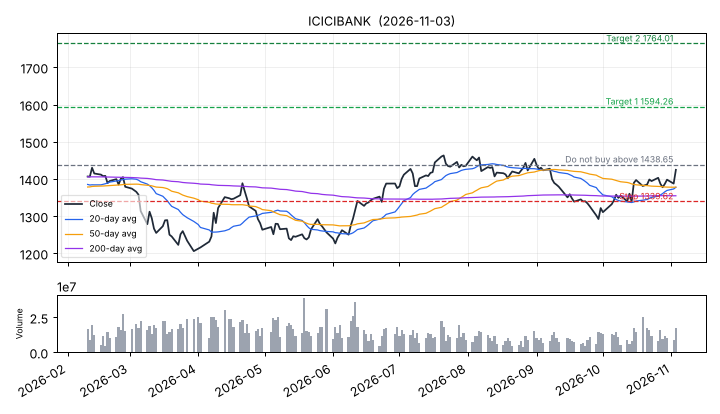

Generated 2026-11-03 13:26. Strategy a1 | mode: LIVE | AGGRESSIVE MODE - strategy NOT validated (your choice)
| Nifty 50 close | 23,811 (-0.9% vs 200-day average) |
| Breadth (% of top-500 above 50-day avg) | 33% |
| India VIX (fear gauge) | 15.7 |
| Market type (history of this strategy in such markets) | Market type: Nifty in DOWNTREND, mood CALM (VIX 15.5), breadth WEAK (29% of stocks above 50-day avg). In markets like this, past a1 trades won 43% (avg +0.07R over 49 trades); with weak breadth: 51% wins, avg +0.21R. |
| Market filter | WEAK (this strategy version does not use the market filter) |
| Strongest sectors (1 month) | NIFTYIT +15.0%, NIFTYINFRA +7.2%, NIFTYFMCG +4.1% |
| Weakest sectors (1 month) | NIFTYREALTY +0.8%, NIFTYENERGY -0.3%, NIFTYMETAL -2.5% |

| Setup | 20/50 average crossover (score 65/100) |
| Buy zone (next morning) | Rs 1410.35 - Rs 1438.65 |
| DO NOT BUY if | price is above Rs 1438.65 or below Rs 1339.62 at the open |
| Stop-loss | Rs 1339.62 (sell everything if price closes/trades below) |
| Target 1 | Rs 1594.26 - sell half, then move stop to your buy price |
| Target 2 | Rs 1764.01 - sell the rest |
| Quantity | 5 shares (~Rs 7,122); loss if stopped ~Rs 424 + charges (limit: 1% of capital) |
| Expected holding | up to 25 trading days (sell at the open after that) |
| Next results date | 2027-01-14 |
| Historical hit-rate of this setup | 47.2% winners, avg n/aR over 516 backtest trades |
| symbol | reason |
|---|---|
| NUVAMA | quality screen: high debt (debt/equity 2.8); negative operating cash flow |
| ULTRACEMCO | price too high for 25% position cap with your capital |
| ADANIGREEN | quality screen: high debt (debt/equity 5.1); very expensive (P/E 122) |
| ANGELONE | quality screen: negative operating cash flow |
None.
To add a trade you placed: open my_trades.csv in Excel/Notepad and add a line like INFY,2026-11-03,1500,7,1430 (symbol, buy date, buy price, quantity, stop).
None.
Forward any tip to your Telegram bot; it answers GOOD / RISKY / AVOID and tracks the real outcome here. Full list: journal/forwarded_tips.csv
Paper period: started 2026-11-02, 0.1 weeks so far; paper drawdown 0.0%
| closed | win_rate_pct | avg_r | total_pnl | |
|---|---|---|---|---|
| Paper tips (live, since start) | 0 | |||
| Shadow picks (recorded while tips blocked) | 0 | |||
| Backtest expectation | 516 | 47.2 | avg Rs 29/trade | - |
Few closed trades = results are mostly luck. Wait for 30+ before judging.
Strategy searches (each period's strategy chosen only from earlier data). Details in the validation folder (search*.html).
Last validated 2026-11-03 - overall: FAILED. Variants tried so far: 1755. Full report: validation/latest.html
| FAIL | Walk-forward: beats NIFTYBEES in most periods | won 3 of 13 periods (23%); needed 80% |
| FAIL | Holdout: beats NIFTYBEES and liquid fund | strategy -8.3% vs NIFTYBEES -3.2% vs liquid fund 9.8% |
| FAIL | Holdout drawdown <= 15% | -17.0% |
| FAIL | Walk-forward drawdown <= 20% | -20.3% (continuous run) |
| PASS | Enough trades (>= 100) | 519 trades |
| FAIL | Excess return statistically convincing | t-stat -1.43; needed 3.87 (because 1755 variant(s) tried) |
Research, not advice. No system can guarantee profit; you can lose money. You decide and place every order yourself.